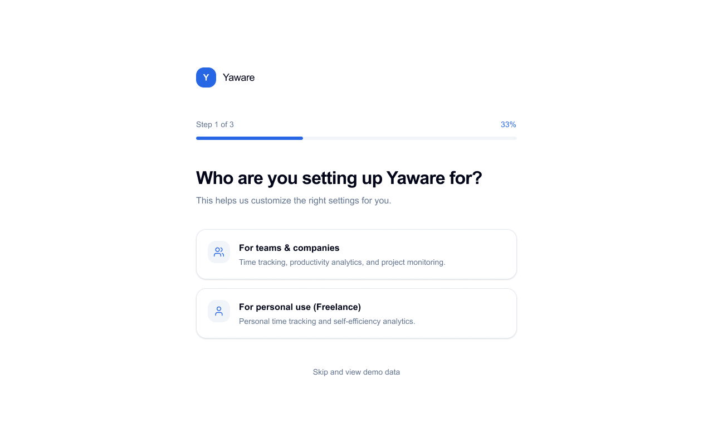
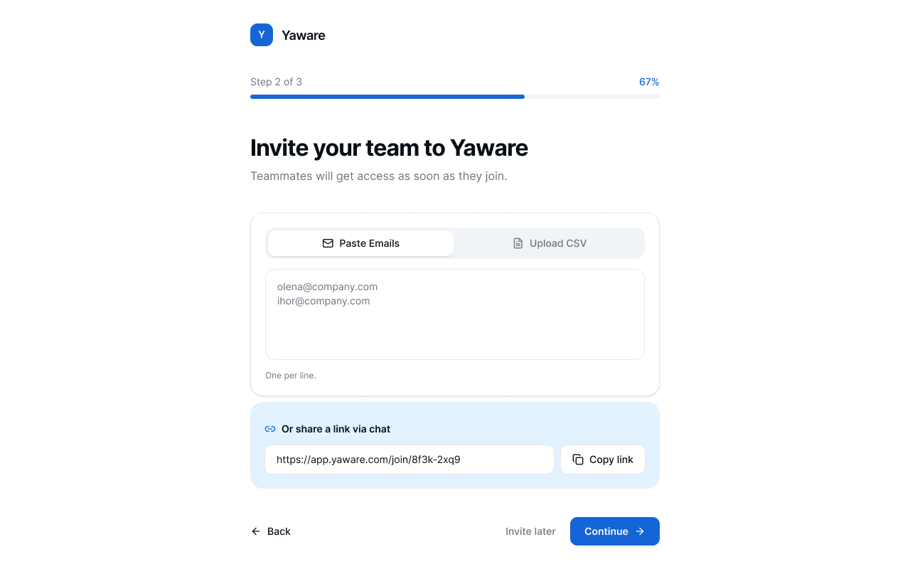
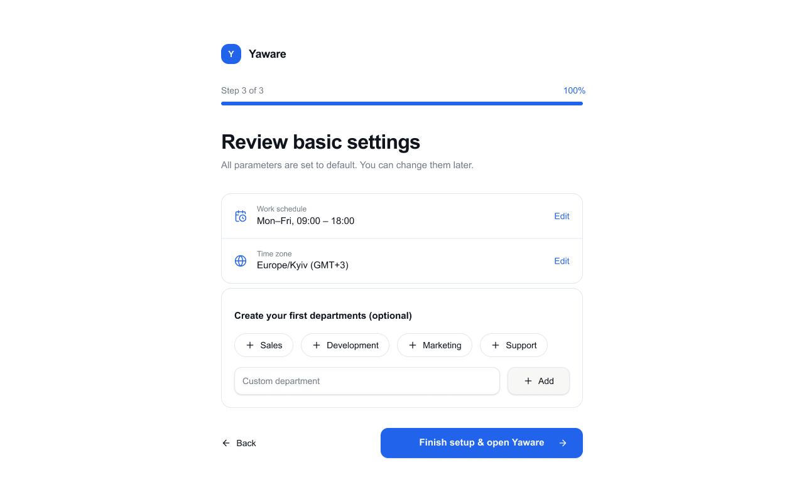

Redesigned onboarding for a B2B time-tracking SaaS to reduce activation friction and improve trial-to-paid conversion.
New users entered a feature-dense product before understanding the first action that would make Yaware useful to them. The result was slow activation, navigation friction, and weak trial momentum.
Users landed in a complex workspace before understanding what to do first or where the core tracking action lived.
Primary activation actions competed with secondary navigation, settings, and product configuration.
Team managers and individual users were pushed through the same setup despite fundamentally different jobs-to-be-done.
We didn't rely on assumptions. Heatmap analysis via Microsoft Clarity and qualitative interviews with the sales department exposed exact friction points during first-time sessions.
Research showed that the onboarding problem was not one generic usability issue. Two primary user groups entered the product with different activation goals.
Invite a team, configure tracking, and quickly understand whether productivity data is useful enough to advocate internally.
Begin tracking work immediately, organize billable time, and generate reports without navigating team-oriented configuration.
If we personalize onboarding by user intent and expose the first core action earlier, users will reach initial value faster and complete activation with less friction.
Instead of forcing all users into a generic dashboard, we introduced Role-Based Branched Onboarding with an immediate Aha-Moment on Step 1.
Explicit choice between Team Lead and Individual User right upon entering to personalize the workspace.

Linear 3-step setup with progress bar that simplifies initial team member invitations and integrations.

Direct transition to automated tracking without heavy upfront manual configuration.

Usability testing with 5 active participants revealed critical flaws in our first prototype iterations.
4 out of 5 users ignored the role selection dropdown, assuming it was optional marketing metadata rather than an interface trigger.
Replaced dropdowns with full-width interactive cards highlighting specific use-case scenarios. Skip rate dropped to 0%.
Users struggled to locate the primary "Start Tracking" button due to visual noise from secondary navigation links.
Removed 4 secondary navigation links from the initial screen. Left a single focal CTA button. Dead clicks dropped to 6%.
The redesigned onboarding reduced setup friction, clarified the first core action, and moved users to product value faster.
Users reached the first meaningful tracking action substantially faster.
More trial users progressed into paid conversion after the activation redesign.
Clearer hierarchy reduced misclicks and navigation uncertainty.